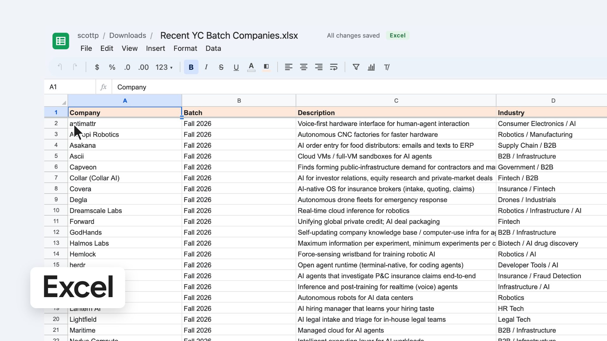
Already on screen at frame 0 (the thumbnail). A selection dragged over A2:B8.
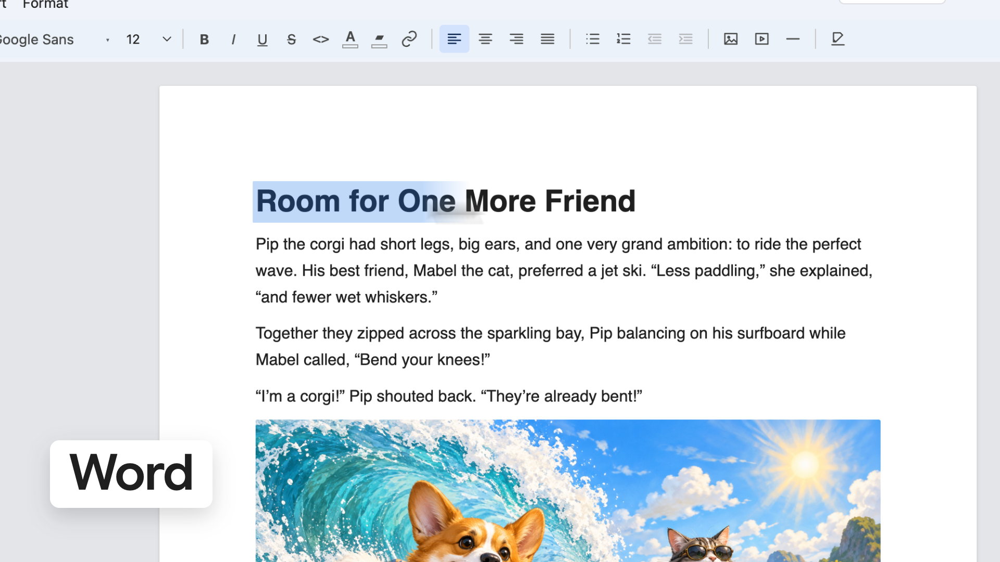
Whip up. The title selected.
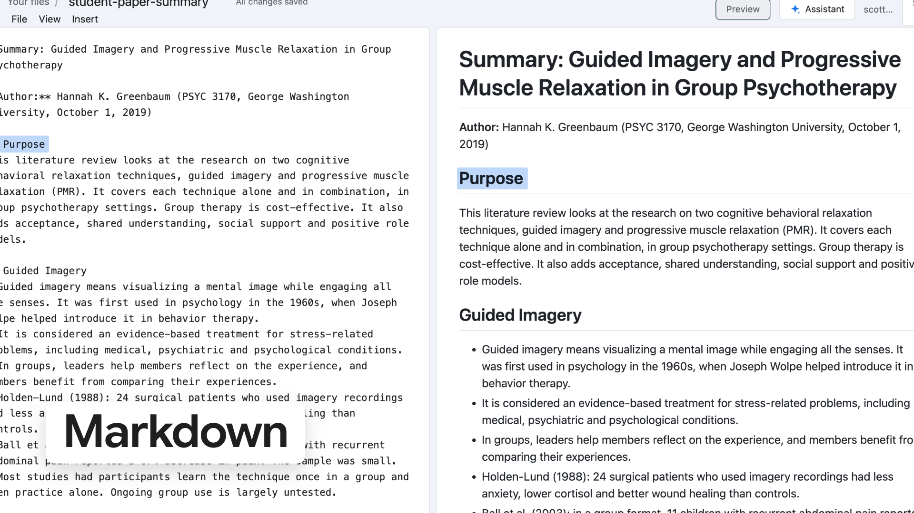
The same heading lights in the source, then in the live preview.
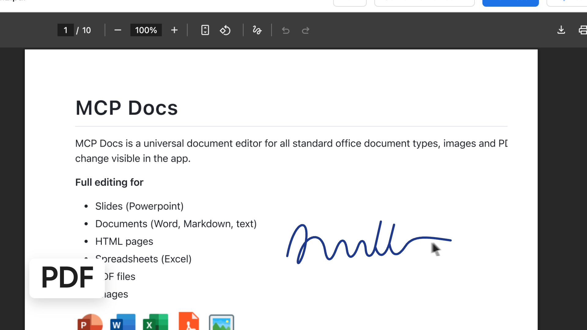
A signature written on the page (the stale install line in this screenshot is cropped out).
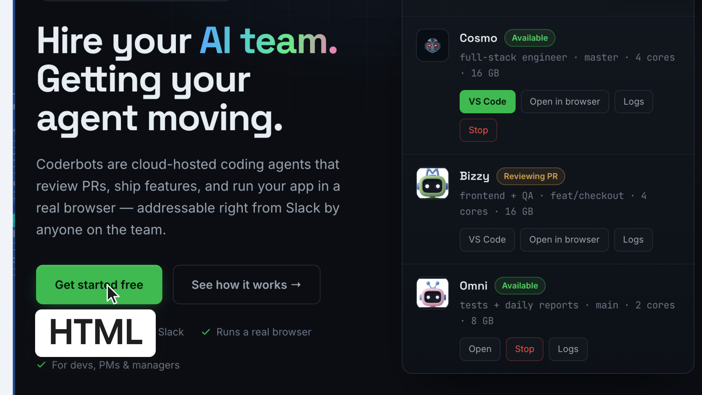
A click on the page’s button.
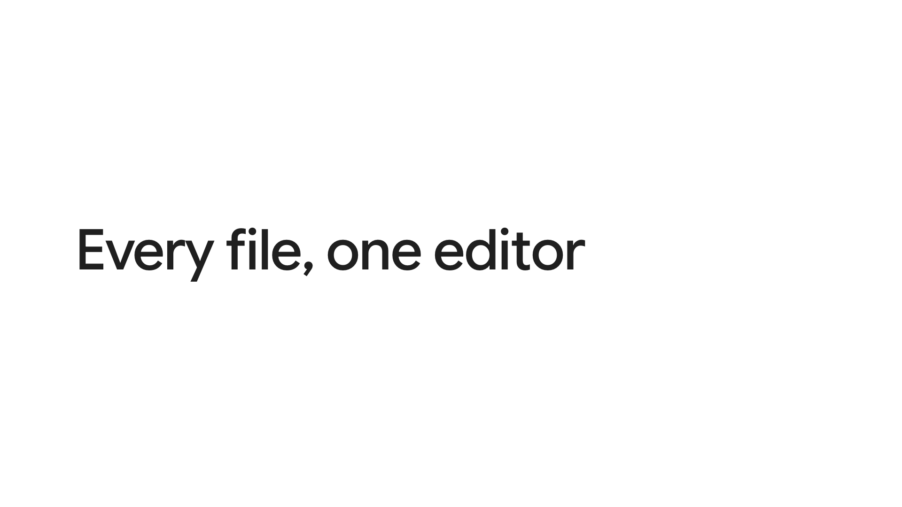
A white field whips up; the line darkens word by word.
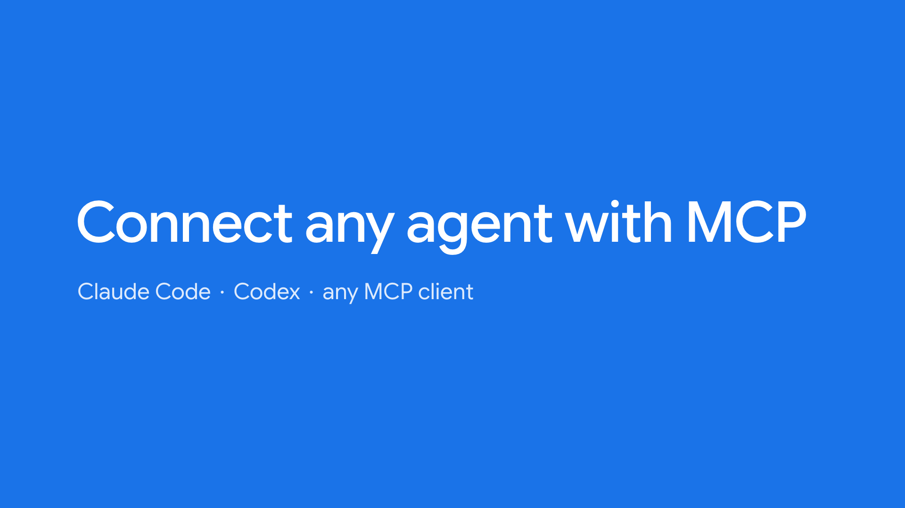
Blue irises out of “editor”. “Connect any agent with MCP”, then “Claude Code · Codex · any MCP client”. The blue closes onto where the app window opens.
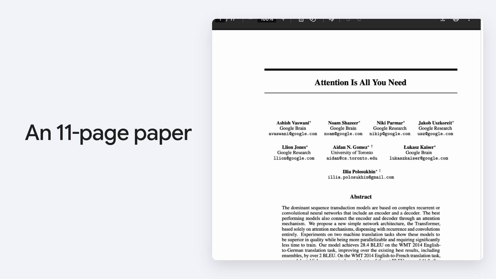
The app window opens out of the blue on the real PDF: “An 11-page paper”.
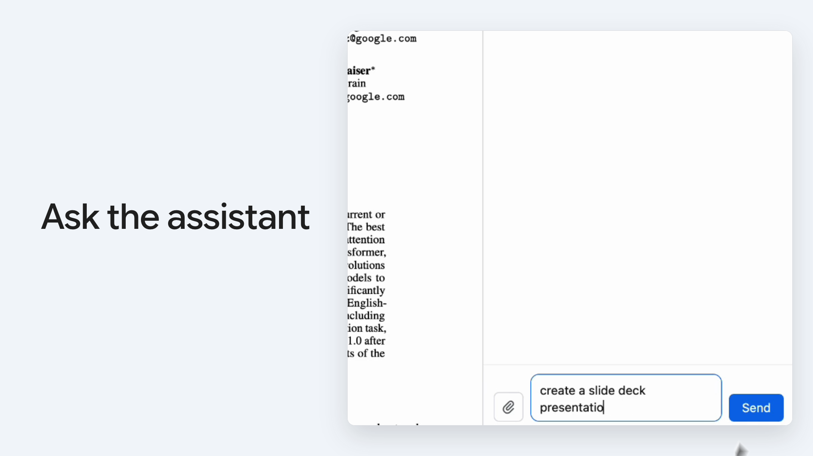
The camera pans to the assistant at 1.6×; the real prompt types and the cursor clicks Send.
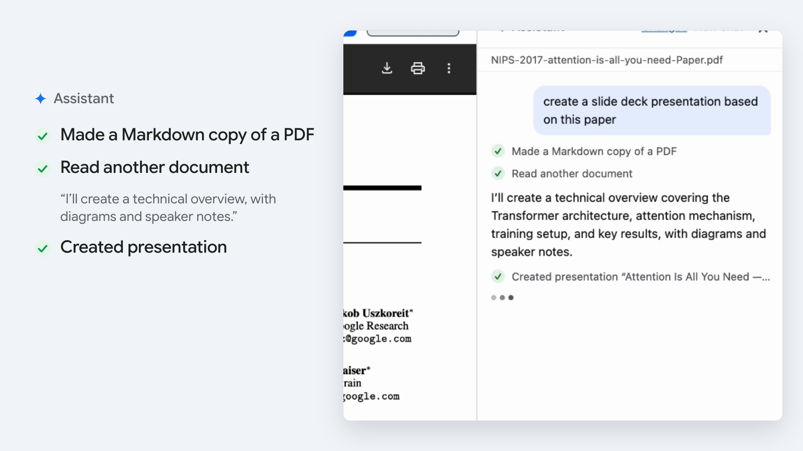
The panel’s own lines land large, each ticking when it appears in the recording (sped 1.5×, waits cut). The deck opens.
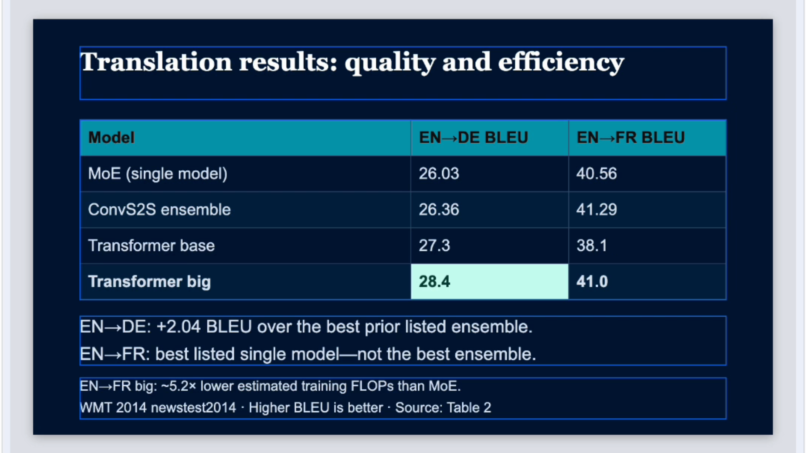
The window becomes the world: the title slide fills the frame, then a punch cut to the results slide, pulling back to the whole app.
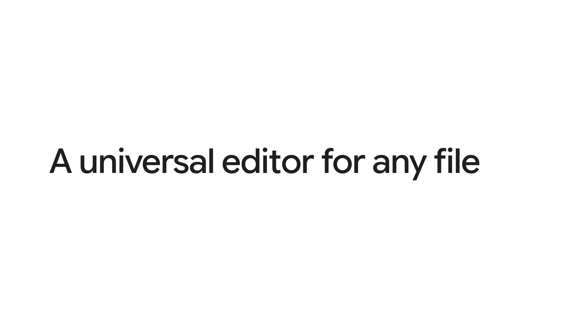
White. “A universal editor for any file”.
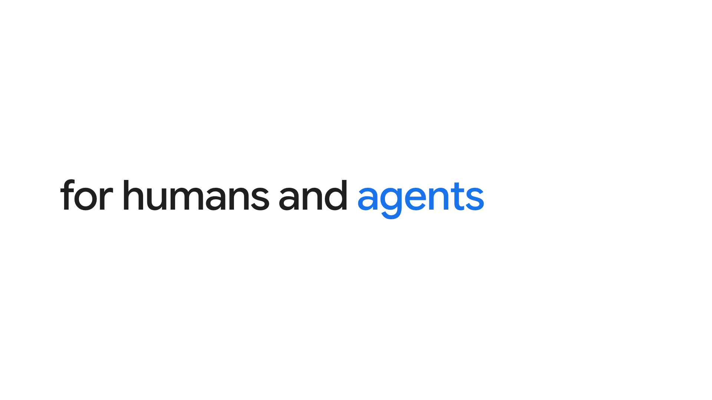
“for humans and agents”, agents in the app’s blue.
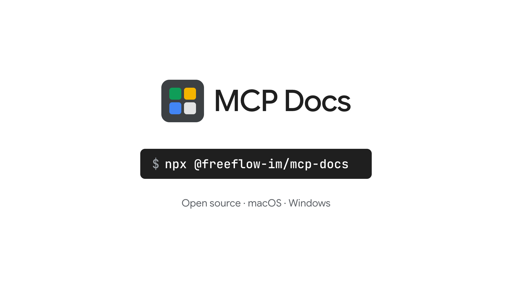
The four squares fly in and lock into the mark, MCP Docs wipes in, the install command types, held to the end.